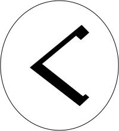

The Arda Archive · Volume III · Records of Persons
The Arda Archive · Sarumanmdcccxxiii

Saruman
of the legendarium
of the legendarium
The name in the scriptsa
— Tengwar, Quenya, classical, APPLIED by this archive — Cirth, Angerthas Daeron
The archive sets this name in the tengwar, Quenya, classical mode APPLIED to it and in the cirth, Angerthas Daeron mode. TOLKIEN DID NOT WRITE IT SO: the letter values are Appendix E's, read from the tables named below; the setting of this name in them is the archive's own work and is offered as nothing else. The sarati are REFUSED, and the refusal is the archive's published answer: it holds the shapes -- 48 of 48 of the ConScript block, Björkman's outline face, and 66 value-labelled plates -- and nothing whatever that binds a shape to a sound. Every value table in every source it can reach is an image carrying no text.
What the corpus says
“nearby have become specifically the chestnuts Saruman area (at bottom) only roughly sketched. It illustrates a”b
“outweighed by the voice (heard now for the last time) of Gandalf, teasing the lordly Saruman at”c
“Curunír’Lân, Saruman the White, fell from his high errand, and becoming proud and impatient”d
“Uglúk u bagronk sha pushdug Saruman-glob búbhosh skai. At the end of the section Orcs and”e
“Now the White Messenger in later days became known among Elves as Curunír, the Man of”f
“But two only came forward: Curumo, who was chosen by Aulë, and Alatar, who was sent”g
“Ents, of the Riders of Rohan, and of Saruman the White in the fortress of”h
“What a world. In terms of my own world, it is as if Saruman had got”i
The name stands in 3,014 cited lines, in 115 of the corpus's 192 texts — most often in The Lord of the Rings (347), The Lord of the Rings a Reader's Companion (239), Unfinished Tales of Numenor and Middle Earth (194).j
The drafts against the published text
497 cited lines stand in 8 volumes of the drafts and 665 in 9 of the published books — the published text carries it more often than the drafts did.k
a The transcription is the ARCHIVE'S OWN WORK and is not attested: the letter values are read from site/arda_scripts.json, site/arda_cirth.json and site/arda_cirth_codepoints.json, and the mode is named beside each line. [I-M]
b The text — R R Tolkien Artist and Illustrator · l.4301[C]
c The text — Unfinished Tales of Numenor and Middle Earth · l.92[C]
d The text — Unfinished Tales of Numenor and Middle Earth · l.12252[C]
e The text — The Peoples of Middle Earth · l.3275[C]
f The text — Unfinished Tales of Numenor and Middle Earth · l.12230[C]
g The text — Unfinished Tales of Numenor and Middle Earth · l.12331[C]
h The text — The War of the Jewels · l.17308[C]
i The text — The Letters of J R R Tolkien Revised and Expanded Ed · l.5966[C]
“'But do not think that when I lost all my goods I lost all my power! Whoever strikes me shall be accursed. And if my blood stains the Shire, it shall wither and never again be healed.'”n
Emblem of Saruman (certh S) — its own, as a device and not a likeness
A line the archive could not resolve
“IARWA1N BEN-ADAR PALLANDO a ALATAR AlWENDIL CURUMO OLÓRIN Go rthm og” — the name is near this line and the archive does not assert that it is this record.o
By another name
Curumo — called so by the Valar, at the choosing of the Istari, in Quenya. “The note ends with the statement that Curumo [Saruman] took Aiwendil [Radagast] because Yavanna begged him, and that Alatar took Pallando as a friend.”p
By another name
Curunír — called so by the Eldar, in Sindarin. “called by the Eldar Curunír, ‘the Man of Skill’, and Mithrandir, ‘the Grey Pilgrim’, but by Men in the North Saruman and Gandalf.”q
Named in the same lines
Gandalf (302), Sauron (193), Radagast (49), Gríma (43) — a shared line is a fact about the line, not a claim that the two met.r
counted from corpus lines that name BOTH records. A shared line is a fact about the line, not a claim that the two met; `eg` names a line a reader can open. [C]
By another name in the texts
Saruman is named Curumo — “The note ends with the statement that Curumo [Saruman] took Aiwendil [Radagast]”s
By another name in the texts
Saruman is named Curunír 'Lân — “Curunír’Lân, Saruman the White, fell from his high errand, and becoming proud and impatient”t
By another name in the texts
Saruman is named Sharkey — “Cosimo, and Saruman took over the name ‘Sharkey’.26”u
By another name in the texts
Saruman is named the Wise — “Saruman the Wise; but I should have sought for the truth sooner,”v
What its name is said to mean
Saruman — “Saruman ‘Man of Skill’, the name among Men of Curunír”w
What was looked for and not found
a marginal hand recording a change to this record — searched over 59 verified notes in site/arda_hands.json, and nothing was found.x
What was looked for and not found
a concordance headword bound to this route — searched over 937 headwords in site/arda_concordance.json, and nothing was found.y
m Counted — site/arda_apparatus.json[C]
n The passage — The Lord of the Rings · l.45582[EXT]
o The line — Mallorn 41 · l.1599[EXT]
p The passage — Unfinished Tales of Numenor and Middle Earth · l.12341[EXT]
q The passage — The Lord of the Rings · l.48716[EXT]
r Counted — site/arda_apparatus.json[C]
s The line, found through Tolkien Gateway — Unfinished Tales of Numenor and Middle Earth · l.12341[C]
t The line, found through Tolkien Gateway — Unfinished Tales of Numenor and Middle Earth · l.12252[C]
u The line, found through Tolkien Gateway — Sauron Defeated · l.3378[C]
v The line, found through Tolkien Gateway — The Lord of the Rings · l.11637[C]
w The line, found through Tolkien Gateway — The Silmarillion · l.15443[C]
x The search — site/arda_apparatus.json[C]
y The search — site/arda_apparatus.json[C]
☞HT·viijSauron
Seven stars — the archive's own tailpiece
Where the cited line does not hold the value
the other names the texts give — Curumothe quote occurs at line 12331, not at the cited line 12341 (10 away)
the other names the texts give — Sharkeythe quote occurs at line 2930, not at the cited line 3378 (448 away)
the other names the texts give — the Wisethe quote occurs at line 832, not at the cited line 11637 (10805 away)
What this archive holds back, and why — 16 item(s)
corpus silent ×8 — no tier-1 corpus file holds this value as whole words. C831 lets a reader see a TG datum only where a Tolkien text carries it; this archive's Tolkien texts do not.
not beside the person ×4 — the value stands in this archive's tier-1 corpus and so does the person's name, and no ONE LINE carries both in a form that attributes the value to this person. Four things put an item here and they are all about the LOCUS, never about the claim: the two never share a line; every mention of the name on that line is a genitive (`the Heir of Isildur was crowned King of Gondor` -- a true claim on a line about Aragorn); another person the archive holds stands between them (`Isildur had established Meneldil as King of Gondor`); or the two match the line under folding but not as a token sequence, so the archive cannot say precisely where they stand. The claim may well be true. This module has no line it can show a reader for it, and a citation a reader cannot check is what rule 1 forbids.
not distinctive ×3 — the value is a common word, a field label, or a fragment of the person's own name, so a corpus match on it would confirm the vocabulary and not the claim.
not set as a name ×1 — a title or a by-name is a proper noun and the texts set it as one -- `the Necromancer`, `Prince of Dol Amroth`, `Annatar`. No content word of this value stands CAPITALISED in the line that carries it, so the line uses the words and does not name anybody with them: `the shadow of Mordor reached` is not a naming of Sauron, though `The Shadow` is a true by-name of his. The claim may be right; this line is not evidence of it. Not applied to name-meanings, which are not proper nouns and never were.
Part of the Arda Archive — a corpus-first index of Tolkien's legendarium; claims are cited or marked how far they are inferred, silences are declared, and the colophon prints how many claims carry neither.